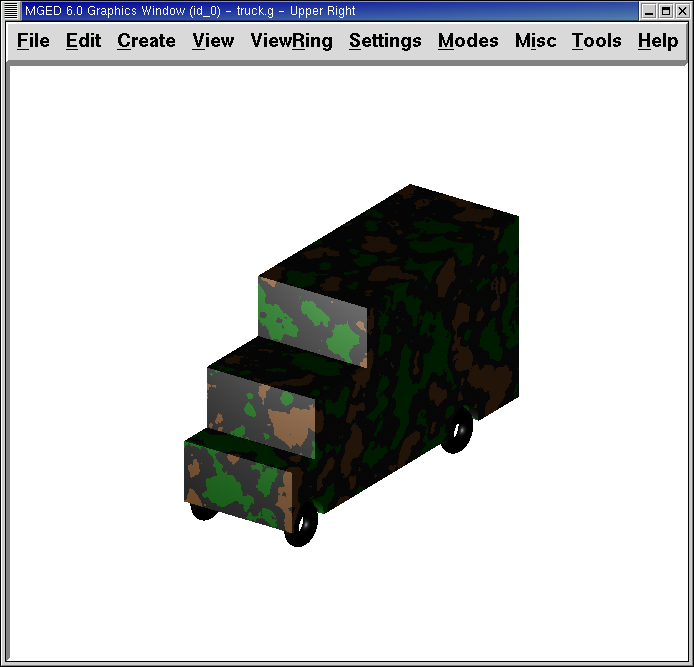

15. Creating a Toy Truck
In this lesson, you will:
-
Create a toy truck from three shapes.
-
Make copies of shapes using the Primitive Editor.
-
Make combinations and regions of a more complex object.
-
Check the data tree for accuracy.
-
List contents of the database.
-
Assign material properties using the Combination Editor.
-
Identify the difference between OK, Accept, Apply, Reset, Cancel, and Dismiss.
-
Identify the on-screen help option.
-
Identify the stacker option.
-
Experiment with the attributes of the camo shader.
In previous lessons, you created and edited shapes to produce simple objects. This lesson focuses on creating a slightly more complex object, a toy truck, from the Command Window. Your completed truck should look similar to the following truck:

Begin by creating a new database called truck.g.
1. Creating an rpp for the Cab of the Truck Using the In Command
To make the cab of the truck, you will create a right parallel piped using the in (insert) command. At the Command Window prompt, type:
in cab1.s rpp Enter
MGED will ask you to enter values for XMIN, XMAX, YMIN, YMAX,
ZMIN, and ZMAX. Type at the prompt:
0 1 0 1 0 1 Enter
This will tell MGED to:
| 0 | 1 | 0 | 1 | 0 | 1 |
|---|---|---|---|---|---|
Make the value of the rpp’s XMIN 0 |
Make the value of the rpp’s XMAX 1 |
Make the value of the rpp’s YMIN 0 |
Make the value of the rpp’s YMAX 1 |
Make the value of the rpp’s ZMIN 0 |
Make the value of the rpp’s ZMAX 1 |
You could also have used the streamlined version of:
in cab1.s rpp 0 1 0 1 0 1 Enter
A cube shape should appear in the Graphics Window, as follows:
2. Using the Inside Command to Create an rpp for the Hood of the Cab
To make the hood of the cab, you will need to make another rpp shape, this time using the inside command. This special command was originally created to hollow out objects such as gas tanks and boxes; however, it can be used to create any new shape that has some relationship to a pre-existing shape. In this lesson, it is used to cut away material above the hood and in front of the cab.
If you are using BRL-CAD version 6.0 or later, at the Command
Window prompt, type:
inside cab1.s caboff1.s -.1 .7 -.1 -.1 .5 -.1 Enter
The inside command tells MGED to:
| inside | cab1.s | caboff1.s | -.1 | .7 | -.1 | -.1 | .5 | -.1 |
|---|---|---|---|---|---|---|---|---|
Inside the shape |
named cab1.s, |
create rpp called caboff1.s |
Make face 1234 (front) -.1 units thick |
Make face 5678 (rear) .7 units thick |
Make face 1485 (right) -.1 units thick |
Make face 2376 (left) -.1 units thick |
Make face 1265 (bottom) .5 units thick |
Make face 3487 (top) -.1 units thick |
|
In this example, each negative thickness number indicates that caboff1.s will protrude through the corresponding face of cab1.s. Running the l (list) command, you can see the vertices for the box it creates: caboff1.s: ARB8 1 (1.1, -0.1, 0.5) 2 (1.1, 1.1, 0.5) 3 (1.1, 1.1, 1.1) 4 (1.1, -0.1, 1.1) 5 (0.7, -0.1, 0.5) 6 (0.7, 1.1, 0.5) 7 (0.7, 1.1, 1.1) 8 (0.7, -0.1, 1.1) |
|
Note that in older versions of
|
When in Multipane mode, the design should resemble the following illustration.

3. Using an rcc to Create a Wheel Well in the Cab
Make a cylinder (rcc) to use for cutting away a space for the first wheel of the cab. At the Command Window prompt, type:
make well1.s rcc Enter
Go to the Edit menu and click on Primitive Selection, then well1.s. After selecting a Left view, go back to Edit and select Scale. Reduce the size of the rcc until its diameter is about the right size for a wheel well. Go back to Edit and select Rotate. As discussed previously, one way to easily rotate the rcc is by using the CTRL key and the left mouse button to drag the top lip of the rcc down (in a straight line) until the A and C edit labels overlap. However, because we know we want to flip the object exactly 90'0 along the x axis, a better choice is to use the Command Line and type:
p 90 0 0 Enter
After doing so, you may still have to use the Set H and Scale editing options to resize and the SHIFT key and left mouse button to position your wheel well. When satisfied, select Accept on the Edit menu. Your design should look similar to the following in Multipane mode:

4. The Difference Between OK, Accept, Apply, Reset, Cancel, and Dismiss
The GUI environment of MGED offers users several options for
applying, accepting, or rejecting changes made through buttons at the
bottom of dialog pop-up windows. To use any of these options, just
place the mouse cursor over the desired button and click the left
mouse button.
Selecting the Accept or OK button will tell MGED to record the
changes you have made to a shape, region, or combination. MGED
uses the Accept and OK buttons interchangeably. When you select
Accept or OK, the window you are using will automatically close.
The Apply button tells MGED to apply a change you have made and
wait for further instructions. The window does not automatically
close. This enables you to make changes to several things without
having to reopen the window for each change.
The Reset button tells MGED to reset values you have changed in
a dialog box to the last values you applied or accepted. The Reset
button does not close the dialog box. The Cancel or Dismiss buttons
discard any changes made in the dialog box and leave values unchanged
from their last stored settings. These two buttons close the
dialog box.
5. Using the Primitive Editor to Make a Copy of the Wheel Well
To make a copy of your wheel well, go to the Edit menu and select Primitive Editor, which will contain information about the last shape edited through the dialog box (or myPrimitive if nothing has been edited). Erase the old shape’s name in the Name entry box. Type in well1.s and press Reset (or press Enter while the cursor is still in the Name entry box). The parameter values of the old shape will be replaced by those of the new shape. The Primitive Editor will change and look something like the following example:

Go back to the Name text box and change the 1 to a 2 and click on OK. Change to Front under the View menu. Go to Edit/Primitive Selection and select well2.s. Use the SHIFT and left mouse button to drag the new wheel well into position, as shown in the following illustration. Check your alignment in Multipane mode and then select Accept when you are finished.

6. Making a Combination of the Cab Shapes
It is now time to make a combination of the various cab shapes.
comb cab1.c u cab1.s - caboff1.s - well1.s - well2.s Enter
This command tells MGED to:
| comb | cab1.c | u | cab1.s | - | caboff1.s | - | well1.s | - | well2.s |
|---|---|---|---|---|---|---|---|---|---|
Make a combination |
Name it cab1.c |
Make a union |
of the shape cab1.s |
minus |
the shape caboff1.s |
minus |
the shape well1.s |
minus |
the shape well2.s |
Before you go any further, you should check your data tree by typing tree cab1.c. The data tree should say:
cab1.c/ u cab1.s - caboff1.s - well1.s - well2.s
If you type ls (list) at the Command Window prompt, you should find that your database is composed of the combination cab1.c and the shapes cab1.s, caboff1.s, well1.s, and well2.s. You will find as you make more complex objects that you will periodically refer to the list of the database to ensure it is composed of the elements you want.
7. Creating an rpp for the Body of the Truck Using the In Command
To make the body of the truck, type at the Command Window prompt:
in body1.s rpp 0 2 0 1 0 1.5 Enter
By now, you should know what this command tells MGED to do. If
you have forgotten, refer back to making the cab of the truck.
Edit the body of the truck so that its front face slightly overlaps the cab’s back face. Check different views to make sure the body lines up correctly with the cab. Accept your changes when you are done, and then Blast your design. Your truck should now look like the following:

8. Using the Primitive Editor to Make Two More Wheel Wells
To make two wheel wells for the body of the truck, repeat the steps used in making the second wheel well. Name your new shapes well3.s and well4.s. Using multiple views, move the new shapes into position so that your truck now looks similar to the following:
9. Making a Combination of the Truck Body and Wheel Wells
Make a combination of the truck body and the two new wheel wells. Name it body1.c. The tree for body1.c should say:
body1.c/ u body1.s - well3.s - well4.s
10. Making a Region of the Cab and Body
Before adding wheels to the truck, you need to make a region of the cab and body. At the Command Window prompt, type:
r truck1.r u cab1.c u body1.c Enter
11. Making Wheels for the Truck
Perhaps the best shape for making wheels is the torus. You can create a shape through the Command Window that has the correct size and placement for your design without further editing. However, this lesson is designed to give you practice rotating and translating shapes.
To make the first wheel, type at the Command Window prompt:
in wheel1.s tor 0 0 0 .5774 .5774 .5774 .18 .08 Enter
This command tells MGED to:
| in | wheel1.s | tor | 0 0 0 | .5774 .5774 .5774 | .18 | .08 |
|---|---|---|---|---|---|---|
Create a shape |
Name it wheel1.s |
Make the shape a torus |
Make the values of the vertex 0 0 0 |
Make the values for x, y, and z of the normal vector .5774 .5774 .5774 |
Make the value of the outer radius .18 |
Make the value of radius 2 (the tire thickness) .08 |
Change View to Left and then Edit the position of the wheel. To correctly align the wheel with the truck, you will have to Rotate the tire using the CTRL key and any mouse button. Scale and Translate the wheel into position as appropriate and check your alignment from several different views. Accept your changes when finished.
Using the Primitive Editor, make the second, third, and fourth wheels. Move each of these wheels into position until your truck looks like the following:

12. Making a Region of the Wheels
Make a region of the four wheels. When you are finished, your data tree for wheel1.r should say:
wheel1.r/R u wheel1.s u wheel2.s u wheel3.s u wheel4.s
13. Assigning Material Properties to the Truck Regions
Your truck is composed of two regions: truck1.r and wheel1.r. Use the Combination Editor and select truck1.r.
In the Combination Editor, the camouflage (camo) shader creates a pseudo-random tricolor camouflage pattern on the object using a fractal noise pattern. The shader offers lots of attributes from which to choose. For now, select a Background Color of black (0 0 0) and make Color #1 green (0 134 0), and Color #2 rust brown (164 96 38). To make the pattern design proportional to the truck, select a Noise Size of .25 and then Apply the selections. The Combination Editor window for the camo shader should look like this:
Apply a black color and plastic shader to the wheels (wheel1.r) and click on OK. Then raytrace your design.
14. Using the On-Screen Help Option
You have probably noticed that many of the MGED menus offer a
wide variety of options from which to choose. With so many choices
available, it is easy to forget what a particular selection does. To
help users quickly access basic information about the various
MGED options, the program offers a context-sensitive, on-screen
help feature.
The on-screen help can be accessed from any menu or pop-up window by placing the mouse cursor over the name of any option in the menu or window and clicking the right mouse button. The only place this feature doesn’t work is in the geometry portion of the Graphics Window, where the design is drawn.
15. The Stacker Option
In previous lessons, you applied color and a shader to an object to make it appear realistic. Sometimes, however, you will need to apply two or three shaders to an object to get the design you want.
MGED offers three categories of shaders: paint, plastic, and
light. Any combination of these three types of shaders can be applied
to the same object using the stacker option of the shader menu.
There are three plastic shaders: glass, mirror, and plastic. A plastic shader is used to give the perception of space. It does this by making the object’s surface shiny so that it reflects light. A plastic shader is normally applied last in the stacker process.
The paint shaders are used to apply pigment and texture to the surface of an object. Color is pigment, and texture is the three-dimensional quality of the surface material (such as stucco paint).
Pigment shaders include camo, texture (color), texture (black/white), fake star, cloud, checker, test map, and projection. Texture shaders include bump map, fbm bump, and tur bump. Paint shaders are normally applied first in the stacking process and are used in combination with the plastic shader.
The light shader is used to produce illumination in the scene. This helps produce realism in the final image. The light shader is technically complex and is not discussed in this tutorial.
The camo shader involves applying pigments, in a random pattern, to the surface of an object. The camo shader doesn’t indicate the three-dimensional nature of an object. If you want your design to show depth, you will need to stack the camo shader and the plastic shader.
16. Using the Stacker Option
To use the stacker option, open the Combination Editor and select truck1.r. Click on the button to the right of the Shader entry box and then select stack from the drop-down menu. A button with the words Add Shader will appear under the text box. Click on the button and then select camouflage. Set the Background Color to black (0 0 0), Color #1 to green (0 134 0), and Color #2 to rust brown (164 96 38). Make the Noise Size .25. Click on Add Shader once again and select plastic.
At this point, your Combination Editor window may have gone off the bottom of the screen. If this happens, reduce the size of the window as much as you can and then drag it up to the top of the screen. The buttons at the bottom of the box should now appear, and you can Apply your selections.
|
When using the stacker option, you need to keep track of the number of
characters and spaces in the shader text box. |
17. Making a Combination of the Truck Regions
To make a combination of the two truck regions, type at the Command Window prompt:
comb truck1.c u truck1.r u wheel1.r Enter
B truck1.c Enter
Your data tree for truck1.c should read:
truck1.c/ u truck1.r/R u cab1.c/ u cab1.s - caboff1.s - well1.s - well2.s u body1.c u body1.s - well3.s - well4.s u wheel1.r/R u wheel1.s u wheel2.s u wheel3.s u wheel4.s
18. Raytracing the Truck
The last step in creating your truck is to raytrace your design. When
the raytracer has finished, notice that the top and one side of the
truck are very dark. This is because there is very little light
falling on them. Because we have not specified any light sources for
our scene, MGED provides us with a set of default lights.
These defaults consist of a dim light at the location of the viewer
and a brighter one located to the left and below the viewer. Since
the primary light is not really shining on one side of the truck, it
is dark.
There is a special adjustment we can make to improve the overall brightness of the scene. We can adjust the amount of ambient light, which is light that does not come from a particular light source but is a measure of the light generally present in the scene. To adjust the amount of ambient light, click on the Advanced Settings button in the Raytrace Control Panel. Next to Other Options, type -A .9 and click Dismiss. Now when you raytrace, you will get a much lighter image.

Figure 11. Truck with Default Lighting
|

Figure 12. Truck with Added Ambient Light
|
19. Review
In this lesson, you:
-
Created a toy truck from three shapes.
-
Made copies of shapes using the Primitive Editor.
-
Made combinations and regions of a more complex object.
-
Checked the data tree for accuracy.
-
Listed contents of the database.
-
Assigned material properties using the Combination Editor.
-
Identified the difference between OK, Accept, Apply, Reset, Cancel, and Dismiss.
-
Identified the on-screen help option.
-
Identified the stacker option.
-
Experimented with the attributes of the camo shader.